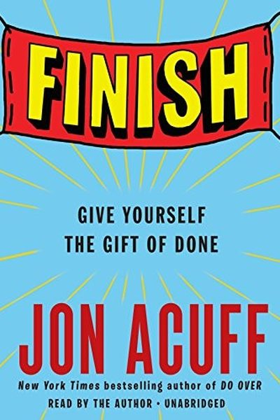

Library › Productivity
Finish — Summary & Key Lessons

Give yourself the gift of done — why perfectionism is the real reason you never finish anything.
📖 OPEN THE FULL INTERACTIVE BREAKDOWN →🌐 Read it in Hindi, Hinglish, Gujarati, Tamil & 22 more languages — free, with audio.
💡 The Big Idea
Jon Acuff's research on 30,000 goals found the same killer: perfectionism. We start with big, perfect goals — then one bad day makes the goal 'ruined' and we quit. The fix is a set of counterintuitive rules: cut your goal in half (smaller goals get finished), choose what to bomb (not everything must be perfect), hide perfectionism from your schedule, and give yourself a 'finish line' that's realistic. Done is a gift you give yourself.
🧠 The 6 Key Lessons
Lesson 1: Perfectionism Is the Real Enemy
The Secret
Acuff's surprising finding: most people don't fail from laziness — they fail from perfectionism. They set a perfect plan, miss one day, decide it's 'ruined', and quit. Perfectionism turns small stumbles into full stops. Naming it — and lowering the bar — is the cure.
📖 Example: Acuff's survey: people who set 'lose 20 pounds in 3 months' often quit after one missed week, while people who set 'walk 3 times a week' were still going months later. The perfect goal was the saboteur. Read the full example →
⚡ Do this: Name the perfect goal that's currently haunting you. Write its 'ruined' trigger — the exact miss that makes you want to quit.
Lesson 2: Cut Your Goal in Half
Cut Your Goal in Half
The single most useful rule: whatever your goal, cut it in half. Smaller goals feel achievable, survive bad days, and actually get finished. A finished half-goal beats an abandoned perfect goal every time — and momentum compounds.
📖 Example: Instead of 'write a book this year', aim for 'write 20 pages a month'. Instead of 'learn Spanish fluently', aim for 'hold a 5-minute conversation'. Finished small goals stack into big results. Read the full example →
⚡ Do this: Take your current goal and cut it in half. Rewrite it today with the smaller, finishable version.
Lesson 3: Choose What to Bomb
Bomb the Right Things
You can't do everything perfectly — so choose what to bomb. Decide consciously which parts of a project will be 'good enough' so the rest can shine. Perfectionists refuse to choose and end up abandoning everything; finishers choose their battles.
📖 Example: Acuff's writer friend decided his first book's grammar would be handled by an editor so he could pour energy into the ideas — bombing the grammar saved the book. Acuff's rule: pick the one thing that, if left undone, would make everything else pointless —… Read the full example →
⚡ Do this: List the parts of your project. Circle the one that must be excellent, and consciously 'bomb' the rest with good-enough.
Lesson 4: Hide Your Goal From Perfectionism
The Day Before Perfect
Don't tell your perfectionist self the details. If you announce 'I'll exercise every day at 6 AM', one missed morning ruins the story. Instead, keep your goal quiet, flexible, and day-by-day. Perfectionism can't sabotage a goal it doesn't know the shape of.
📖 Example: Acuff advises not announcing 'perfect streak' plans — the streak becomes the goal and the miss becomes the failure. Flexible, private goals survive reality. He tells the story of a writer who announced her novel to everyone — and then the praise made the… Read the full example →
⚡ Do this: Take one goal and make it flexible: no streak, no perfect schedule, just 'as often as possible'. See if finishing gets easier.
Lesson 5: The Day You Start Is the Day You Finish
The Start
The energy you have on day one is the energy you'll most likely have for the whole project — so design day one honestly. If day one of your plan is unrealistic, the whole plan is fiction. Make day one the pattern, and the finish becomes inevitable.
📖 Example: Acuff's insight: people plan 'perfect weeks' they'd never actually live — so they never start. Most people nod at this principle and change nothing. The gap between agreeing and acting is where the whole game is won or lost. Read the full example →
⚡ Do this: Design tomorrow as the honest prototype of your project: the exact amount you'll really do. Then do it.
Lesson 6: Celebrate the Finish Line
The Finish Line
Finishing needs a visible finish line — a clear, honest definition of 'done'. Define what done looks like, write it down, and when you cross it, celebrate. Finishers know the line; perfectionists keep moving it. In daily life, celebrate the Finish Line rewards the patient and punishes the impatient — the difference is rarely talent and almost always consistency.
📖 Example: Acuff tells of a client whose 'done' was 'record 20 podcast episodes' — clear and finishable. When he hit 20, he celebrated, and the celebration fueled the next project. Acuff himself celebrates finishing a book with a specific ritual — a favourite meal and… Read the full example →
⚡ Do this: Write your definition of done for the current project in one sentence. When you hit it, celebrate — out loud, on purpose.
✅ 5-Step Action Plan
- Name your perfect goal's 'ruined' trigger.
- Cut your current goal in half — rewrite it smaller.
- Choose what to bomb; protect only what must shine.
- Make one goal private and flexible.
- Design day one honestly, then start. Define 'done' and celebrate it.
⚠️ When This Doesn't Work
Acuff's 'finish what you start, kill the perfectionism' is the kindest productivity book ever — and Sprig is the warning that finishing the wrong thing is still finishing: the food-delivery startup iterated and 'finished' brilliantly — a loved product, an award-winning team, rounds of funding — and never finished the one thing that mattered: a sustainable unit economy. Acuff's book is about completing the work; the graveyard is full of work that was completed perfectly and died on delivery. The caveat: before you commit to finishing, make sure the finish line you're running toward is the one the market is paying for. Finished and wrong is still wrong.
💀 The Graveyard Proves It
🥗 Sprig — Cooked Its Own Meals, Delivered Its Own Losses. Burn: $57M. Read the full case study →
💬 Best Quotes from Finish
- “Perfectionism is a dream killer.”
- “Cut your goal in half.”
- “The day you start is the day you finish. No, really.”
Interactive version: mark lessons as read, listen in your language, share quote cards.